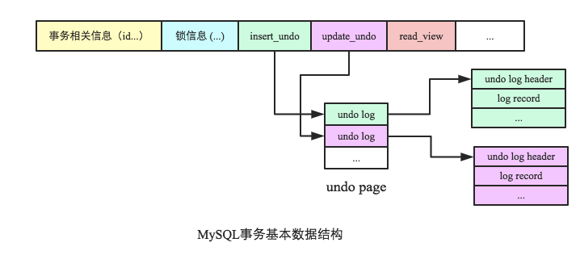

Ch07-MySQL 之 事务
April 1, 2018
数据库事务 (Database Transaction)，是指作为单个逻辑工作单元执行的一系列操作，要么完全执行，要么完全地不执行。要么完全地不执行。一般来说，事务是必须满足 4 个条件 (ACID)：原子性 (Atomicity)、一致性 (Consistency)、隔离性 (Isolation)、持久性 (Durability)。
1. 原子性 (Atomicity) #
MySQL 实现回滚操作完全依赖于 undo log。使用 undo 实现原子性在操作任何数据之前，首先会将修改前的数据记录到 undo log 中，再进行实际修改。如果出现异常需要回滚，系统可以利用 undo 中的备份将数据恢复到事务开始之前的状态。

上图是 MySQL 中表示事务的基本数据结构，其中与 undo 相关的字段为 insert_undo 和 update_undo，分别指向本次事务所产生的 undo log。
事务回滚根据 update_undo（或者 insert_undo）找到对应的 undo log，做逆向操作即可。对于已经标记删除的数据清理删除标记，对于更新数据直接回滚更新；插入操作稍微复杂一些，不仅需要删除数据，还需要删除相关的聚集索引以及二级索引记录。
2. 一致性 (Consistency) #
3. 隔离性 (Isolation) #
3.1 说明 #
| 隔离级别 | 说明 |
|---|---|
| Read uncommitted | 一个会话可以读取其他事务未提交的更新结果，如果这个事务最后以回滚结束，这时的读取结果就可能是错误的，所以多数的数据库应用都不会使用这种隔离级别。 |
| Read commited | 这种隔离级别的事务只能读取其他事务已经提交的更新结果，否则，发生等待，但是其他会话可以修改这个事务中被读取的记录，而不必等待事务结束，显然，在这种隔离级别下，一个事务中的两个相同的读取操作，其结果可能不同。 |
| Repeatable read | 在一个事务中，如果在两次相同条件的读取操作之间没有添加记录的操作，也没有其他更新操作导致在这个查询条件下记录数增多，则两次读取结果相同。（该级别是 InnoDB 默认的隔离等级）。 |
| Serializable | 在一个事务中，读取操作的结果是在这个事务开始之前其他事务就已经提交的记录。 |
InnoDB 默认的隔离级别是 REPEATABLE READ（可重复读），并且通过间隙锁算法 (next-key locking) 策略防止 Phantom Read 的出现
| 问题 | 说明 |
|---|---|
| Dirty Read | 事务 A 读取了事务 B 未提交的数据，然而事务 B 最后却进行了回滚。 |
| NonRepeatable Read | 事务 A 读取了事务 B 已提交的数据，然后事务 B 又进行了修改操作。 |
| Phantom Read | 事务 A 读取了事务 B 已提交的数据，然后事务 B 又进行了插入操作。 |
3.2 问题 #
不同的隔离级别面临的问题。
| Isolation/Question | Dirty Read | NonRepeatable Read | Phantom Read |
|---|---|---|---|
| Read uncommitted | Y | Y | Y |
| Read commited | N | Y | Y |
| Repeatable read | N | N | Y |
| Serializable | N | N | N |
4. 持久性 (Durability) #
MySQL 事务持久化涉及的组件相对比较多，主要有 doublewrite、redo log 以及 binlog。
4.1 MySQL 数据持久化（DoubleWrite） #
实际上 MySQL 的真实数据写入分为两次写入，一次写入到一个称为 DoubleWrite 的地方，写成功之后再真实写入数据所在磁盘。为什么要写两次？这是因为 MySQL 数据页大小与磁盘一次原子操作大小不一致，有可能会出现部分写入的情况，比如默认 InnoDB 数据页大小为 16K，而磁盘一次原子写入大小为 512 字节（扇区大小），这样一个数据页写入需要多次 IO，这样一旦中间发生异常就会出现数据丢失。另外需要注意的是 DoubleWrite 性能并不会影响太大，因为写入 DoubleWrite 是顺序写入，对性能影响来说不是很大。
4.2 redolog 持久化策略（innodb_flush_log_at_trx_commit） #
redolog 是 InnoDB 的 WAL，数据先写入 redolog 并落盘，再写入更新到 bufferpool。redolog 的持久化策略默认为 1，表示每次事务提交之后 log 就会持久化到磁盘；该值为 0 表示每隔 1 秒钟左右由异步线程持久化到磁盘，这种情况下 MySQL 发生宕机有可能会丢失部分数据。该值为 2 表示每次事务提交之后 log 会 flush 到操作系统缓冲区，再由操作系统异步 flush 到磁盘，这种情况下 MySQL 发生宕机不会丢失数据，但机器宕机有可能会丢失部分数据。
4.3 binlog 持久化策略（sync_binlog） #
binlog 作为 Server 层的日志系统，主要以 events 的形式顺序纪录了数据库的各种操作，同时可以纪录每次操作所花费的时间。在 MySQL 官方文档上，主要介绍了 Binlog 的两个最基本核心作用：备份和复制，因此 binlog 的持久化会一定程度影响数据备份和复制的完整性。和 redo 持久化策略相同，可取值有 0，1，N。默认为 0，表示写入操作系统缓冲区，异步 flush 到磁盘。该值为 1 表示同步写入磁盘。为 N 则表示每写 N 次操作系统缓冲就执行一次刷新操作。